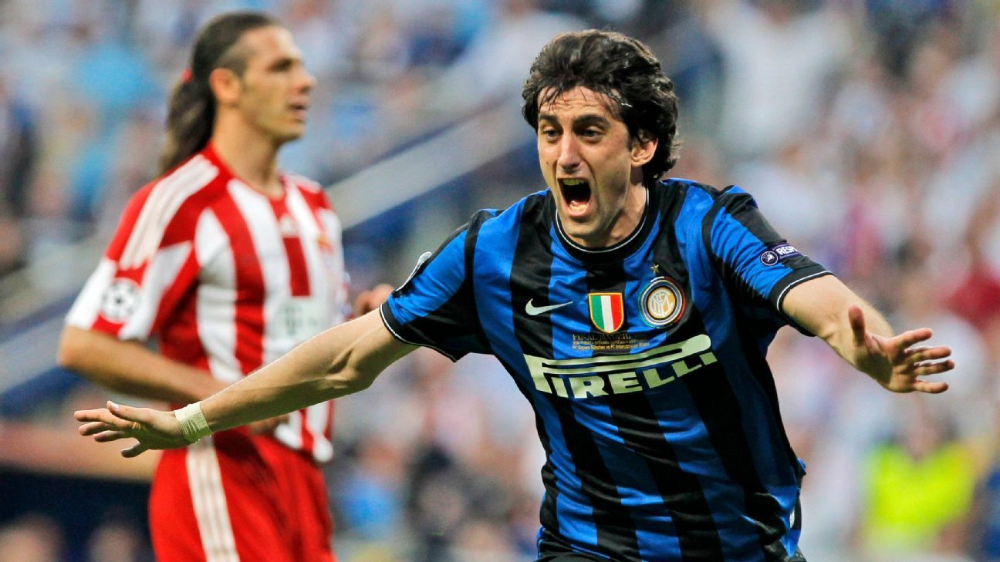

Camiseta Flamengo 2019
Camiseta usada por Flamengo en la final de la Copa Libertadores 2019,
recordada por una de las remontadas más impactantes de la historia del torneo. En apenas dos
minutos, Gabigol marcó dos goles que dieron vuelta el resultado frente a River Plate en Lima y
desataron la locura roja y negra. Esta camiseta no solo vistió a los campeones de América, sino
que quedó marcada por el carácter, la fe y una definición inolvidable que llevó a Flamengo de la
angustia a la gloria en tiempo récord.
Camiseta Liverpool 2005
Camiseta usada por Liverpool en la final de la Champions League 2005, una
noche que pasó a la historia como “El Milagro de Estambul”. Tras irse al descanso 0-3 frente al
Milan, el equipo inglés igualó el partido en seis minutos y lo ganó por penales, en una de las
gestas más increíbles que haya visto el fútbol europeo. Esta camiseta roja quedó unida para
siempre al espíritu de lucha, a la fe inquebrantable y a la épica que define al Liverpool.

Camiseta FC Barcelona x travis scott 2025
Camiseta usada por el FC Barcelona en el Clásico de mayo de 2025 frente al
Real Madrid.
En un partido cargado de tensión y emociones, el Barça dio vuelta un 0-2 para terminar ganando
4-3 en el Estadi Olímpic, con una ráfaga de goles antes del entretiempo. Fue una noche de
carácter y orgullo, donde el equipo recuperó su esencia en el momento justo. Como dato de color,
esta camiseta formó parte de una edición especial en colaboración con el artista Travis Scott,
pero fue el fútbol el que habló más fuerte.
camiseta Botafogo mundial de clubes 2025
Camiseta usada por Botafogo en la victoria frente al PSG por el Mundial de
Clubes 2025.
En uno de los partidos más recordados de su historia reciente, Botafogo derrotó 1-0 al Paris
Saint-Germain en Pasadena y volvió a poner su nombre en lo más alto del escenario internacional.
En un cruce inesperado, el equipo brasileño se impuso con carácter y eficacia ante un rival
lleno de figuras. Esta camiseta quedó asociada a una noche distinta, de orgullo y convicción,
donde el Fogão se hizo escuchar ante el mundo.

Camiseta Real Madrid 2014
Bajo el lema de la "Décima", esta camiseta blanca quedó grabada en la
memoria
de los hinchas merengues como el símbolo del regreso a la gloria europea.Fue con esta
camiseta
que el Real Madrid, tras doce años de espera, conquistó su anhelada décima Copa de Europa en
Lisboa, con aquel agónico cabezazo de Sergio Ramos en el minuto 93 como emblema de la
resiliencia blanca. Una prenda que no solo vistió campeones, sino que marcó el fin de una
sequía
y el renacer de una era.

Camiseta Inter De Milan 2010
Camiseta usada por el Inter de Milán en la final de la Champions League 2010.
Con esta camiseta, el Inter venció al Bayern Múnich en Madrid y conquistó su tercera Copa de
Europa, cerrando una temporada perfecta bajo el mando de José Mourinho. Fue la consagración de
un equipo compacto, pragmático y efectivo, que priorizó el grupo por encima de las
individualidades. Esta prenda quedó ligada para siempre al histórico triplete logrado ese año, y
a una forma de jugar que marcó una época.